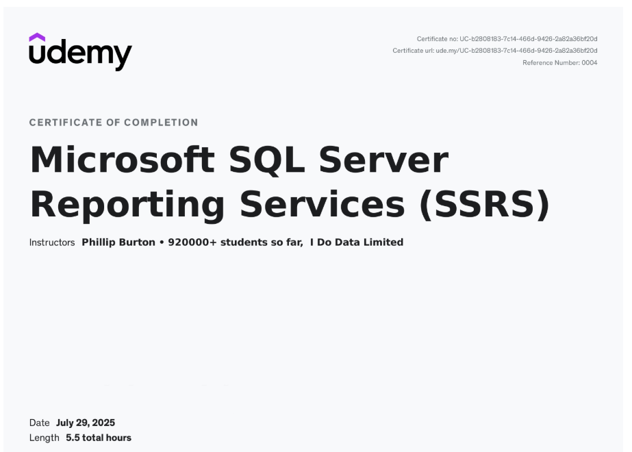

For my May to August co-op term this year, I worked as a Reporting Analyst with Intelligo Partners, on-site at their client, Guardian Capital. The main focus of my role was to develop investment reports using SQL Server Reporting Services (SSRS). I worked in a hybrid model during this term, spending two days a week in the office, and three working remotely from home. Over the Summer, I developed a range of technical and professional skills that I can apply to my future career. This page will take a deeper look into the projects I worked on, the skills I strengthened, and the overall experience I gained throughout the term.
Intelligo Partners is a technology consulting firm that specializes in providing management consulting and project implementation services for asset and wealth managers. The client, Guardian Capital Group, is a global financial services company that is headquartered at 199 Bay Street, in Toronto’s Commerce Court West. Guardian provides investment management services to institutional, retail, and private high-net-worth clients in Canada, the United States, the United Kingdom, and the Caribbean.
At Guardian, I was a part of the “Eagle Project Team”, working to migrate the company's various business lines from an older investment accounting system called Pacer, to a more modern platform called Eagle. This project involved using SQL and Python to develop data conversion scripts and creating new processes for the portfolio managers at Guardian.
As mentioned above, my title was Reporting Analyst, and my key responsibility was to design, develop and maintain SSRS reports containing investment accounting and performance data for portfolio managers at Guardian Capital. The primary skills I used on this job were:
- SQL: I used this programming language to write complex queries that would extract, transform and validate data from a data lake across various different tables of investment data. I first learned this skill in my CIS 2750 course at the University of Guelph, where I used it to join tables in a database and query data based on user input. This co-op allowed me to dramatically deepen this knowledge, applying it to much larger datasets in a real-world scenario.
- SSRS & VisualBasic: I used this BI tool to design the reports and write expressions for calculations and formatting. SSRS was an entirely new technology that I learned during this co-op term. To improve my learning outside of the workplace, I enrolled in an online Udemy course strengthening my knowledge of this tool, and improving the quality of my work. The certificate I earned from this course is included below.
 - Problem Solving: This was essential for debugging queries and optimizing performance. I had practiced this skill in various university courses, and this practice prepared me well for the work term, making it easier to break down problems and find the root of errors in my code.
- Communication: I met with portfolio managers at Guardian to gather requirements from non-technical stakeholders and later present completed reports to them. My Software Design courses at the University of Guelph gave me a strong foundation in this skill, allowing me to effectively translate user needs into technical solutions.
- Agile: Beyond report development, I also contributed to improving my team’s agile process by setting up and maintaining a Jira board to track our progress. Having studied agile methodologies in a Software Design course, I was able to translate that classroom knowledge to my everyday work.
Learning Goals
Prior to the start of my work term, I had outlined four goals for myself to complete, to strengthen my skills and become an effective contributor to the company I worked for.
Learning Goal 1: Technological Literacy
- Goal: To strengthen my proficiency in SSRS and SQL, to develop reliable and professional investment reports.
- Action Plan: Consult with team members regularly for feedback on report structure and data accuracy and practice writing optimized SQL queries to extract data
- Measure of Success: To successfully develop SSRS reports using SQL queries that meet stakeholder requirements with no additional revisions.
- Reflection: During this work term, I have successfully strengthened my skills in using SQL to navigate large databases and building high-quality financial reports in SSRS. I met with various business stakeholders to determine user needs and revised my work based on these meetings. Through working with my colleagues and the learning I did on my own, I was able to get a stronger grasp of SQL, allowing me to further refine the SSRS reports. By the end of the term, I was able to develop reports that met stakeholder requirements with minimal necessary revisions.
Learning Goal 2: Integrative Communication
- Goal: Improve my ability to translate technical reporting outputs into clear and actionable insights for non-technical stakeholders.
- Action Plan: Participate in meetings where I present and explain reporting outcomes and work to prepare presentations that aid in stakeholder understanding
- Measure of Success: Receive positive feedback on my communication style and clarity, and to have stakeholders demonstrate understanding of the material I presented through questions and feedback
- Reflection: Throughout the work term, as I worked with business stakeholders on SSRS reports, I gained insightful knowledge on presenting technical work to non-technical stakeholders. I was given the opportunity to demonstrate the reports I generated to it's users, instructing them how to use the reports and gathering feedback on technical features that needed to be added or revised. I received positive feedback from my supervisor on my presentation of these reports and at the end of my work term, the users of the reports that I worked on were able to successfully use my reports, based on the information that I had communicated to them.
Learning Goal 3: Problem Solving
- Goal: To build my ability to identify data discrepancies or inefficiencies in report generation and resolve them independently.
- Action Plan: Maintain a log of issues found in datasets or reports and implement fixes to errors in datasets using self directed problem solving
- Measure of Success: Successfully reduce errors in reports by provided deadlines
- Reflection: I strengthened my critical and creative thinking skills by proactively addressing data inconsistencies in SSRS reports and SQL queries. I used various trackers to identify my progress and used repeated testing to identify the root causes of issues in the reports. I was able to implement solutions to reduce errors and improve the accuracy of the information displayed.
Learning Goal 4: Personal Organization/Time Management
- Goal: To develop consistent work habits to manage deadlines for multiple tasks efficiently in a hybrid environment.
- Action Plan: Use tools like Jira and Outlook Calendar to track and manage deadlines review tasks with supervisor weekly to ensure I am completing tasks by desired deadlines
- Measure of Success: Complete tasks on or ahead of schedule
- Reflection: Balancing multiple tasks in a hybrid work environment required me to be organized and disciplined. I worked in-office two days a week and worked from home for three. Using Jira, OneNote and my Outlook calendar, I kept track of my assigned deadlines which helped me stay on top of my workload. I had weekly check-ins with my supervisor to ensure that I was meeting expectations and timelines. I was able to complete my tasks on schedule and became more comfortable managing priorities. This experience has strengthened my work habits in a hybrid environment.
This work term as a reporting analyst at Guardian Capital through Intelligo Partners was valuable experience, with lessons that I will carry with me for the rest of my career. It provided me with practical, hands-on expertise in technologies like SQL, SSRS, and VisualBasic. I successfully met my learning goals and improved my communication, problem-solving and time management skills in a hybrid work model. This experience has definitely solidified my career interests and has provided a strong foundation for my future pursuits.